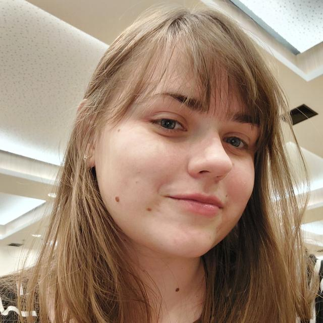

Sobre mim
Desenvolvedora de software com experiência em projetos de tecnologia,
inovação, além de conhecimento em metodologias ágeis, como Scrum.
Atualmente, trabalho em uma equipe de desenvolvimento ágil, onde sou responsável por liderar o
processo de Scrum, incluindo a definição de objetivos, o planejamento de sprints e a organização de
reuniões
diárias de equipe. Além de fazer o levantamento de requisitos com as demais áreas da empresa e
efetivamente
desenvolver software/automações, também fui responsável por planejar e implementar uma versão 2.0 do
software
existente.
Desde a modelagem do banco de dados até o desenvolvimento backend e frontend (utilizando Arquitetura
REST), onde enfrentei desafios como: Criação de Layout no Figma, Autenticação JWT e integrada ao AD
do
Windows, desenvolvimento de Sistema de Gestão de Colaboradores (Cadastro, trilha de carreira, etc.),
além da
migração e refatoração das features pré-existentes.
Tenho habilidades em liderança de projetos, gestão de equipes, análise de dados, automação de
tarefas, levantamento de requisitos e habilidades técnicas em Python, Django, DRF e VueJS, entre
outras
tecnologias.
Sou uma pessoa apaixonada por tecnologia e inovação e estou sempre buscando oportunidades para
aplicarmeus conhecimentos e habilidades em projetos desafiadores e estimulantes. Meu objetivo é
entregar soluções de qualidade, visando sempre clean code e o melhor para o usuário.